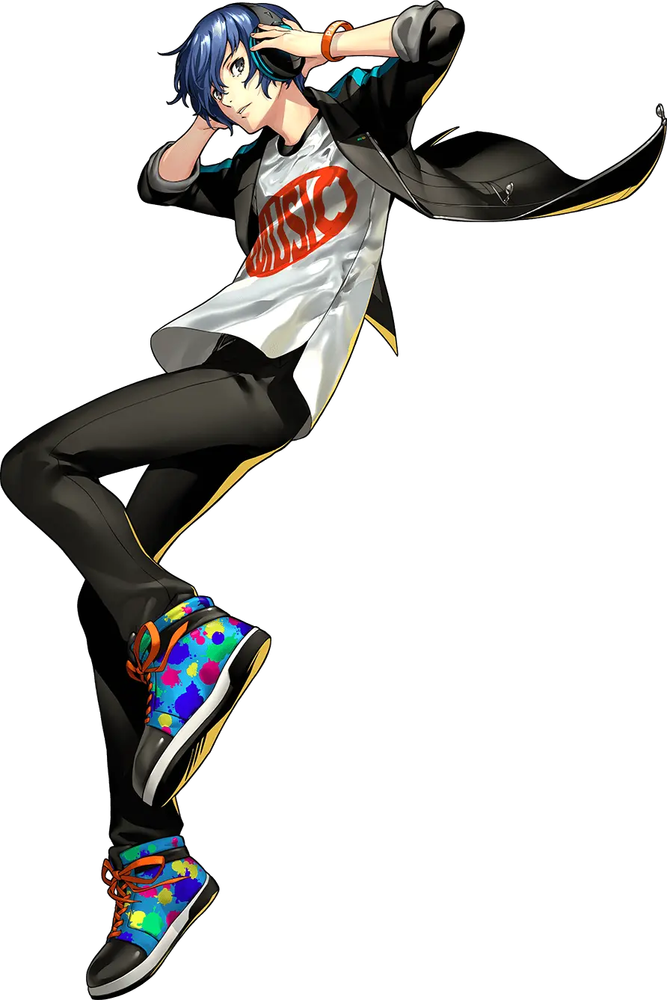
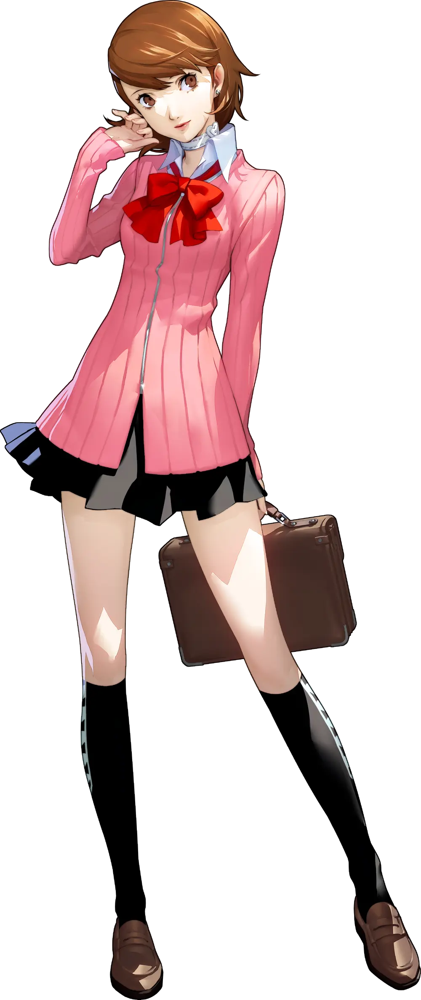
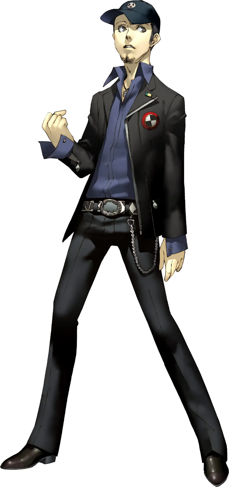
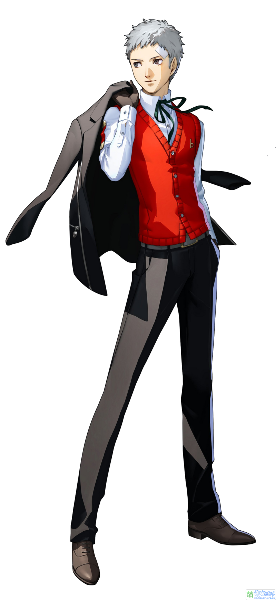

ゆうきまこと (Yuuki Makoto)
A character who represents the player, has a secret instrument "Fool", can hold a plural Persona, and is invited to be a guest of the Velvet Room. The game begins with a transfer to the Moonlight Academy, where he shows outstanding combat ability when his dormitory is attacked by Shadows, and is later selected as the field commander of the Special Extra-Curricular Activities Department (SEES).
岳羽 ゆかり(Yukari Takeba)
Cheerful personality, in the school is quite popular, and the protagonist is 2 years F class, Gongdao Department. Join the special extracurricular activities department before the main character, manipulate the "wind" system magic, a small number of team recovery magic, low physical strength, weak attribute is "thunder". Usually the attack is a through attribute bow.
いおり じゅんぺい (Junpei Iori)
Flirtatious speech brings a lively atmosphere to the surroundings. Same as the protagonist, Grade 2 F, home club. Later than the protagonist to participate in the special extracurricular activities department, the control of "fire" is magic, but the main physical skills, usually the attack is the big sword. The weak attribute is Wind.
Makada Akihiko
Usually calm and collected, but quite reliable when necessary, and has been the master of the boxing division since middle school. He's a third grader like Mizuru. Manipulate "Thunder" magic, a few subsidy magic, the weakness attribute is "ice". Usually the attack is the punch of the strike attribute.